Pesquisa e dados
Observatório Movimento Meninas Olímpicas
O observatório foi lançado em 2019 e atualizado em 2026.
Acessar TFC Brasil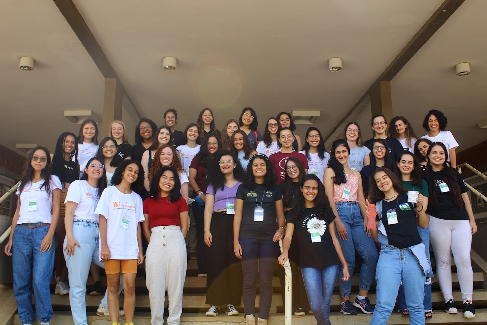
Por que isso importa
Meninas nas olimpíadas hoje, mulheres nos espaços de decisão amanhã
O percentual de meninas premiadas em olimpíadas científicas equivale ao percentual de mulheres em espaços de poder. Assim, o movimento busca ampliar a presença feminina na ciência, na política e no mundo empresarial por meio do incentivo à participação igualitária das meninas em olimpíadas de conhecimento.
A presença feminina é inversamente proporcional ao prestígio das olimpíadas ou dos espaços de poder. O Movimento Meninas Olímpicas atua para reverter essa desigualdade.
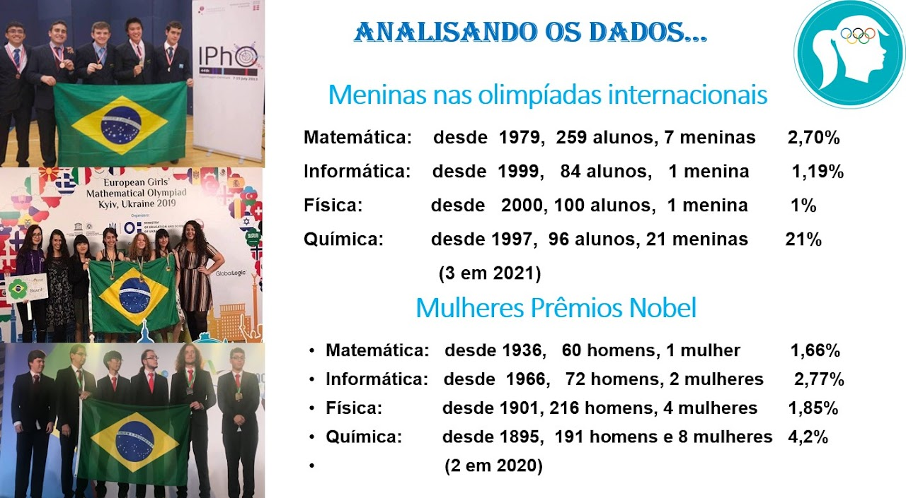
Comparações internacionais
Olimpíadas internacionais e Prêmios Nobel
O percentual de meninas participantes em olimpíadas internacionais também se aproxima do percentual de mulheres agraciadas por grandes premiações científicas.
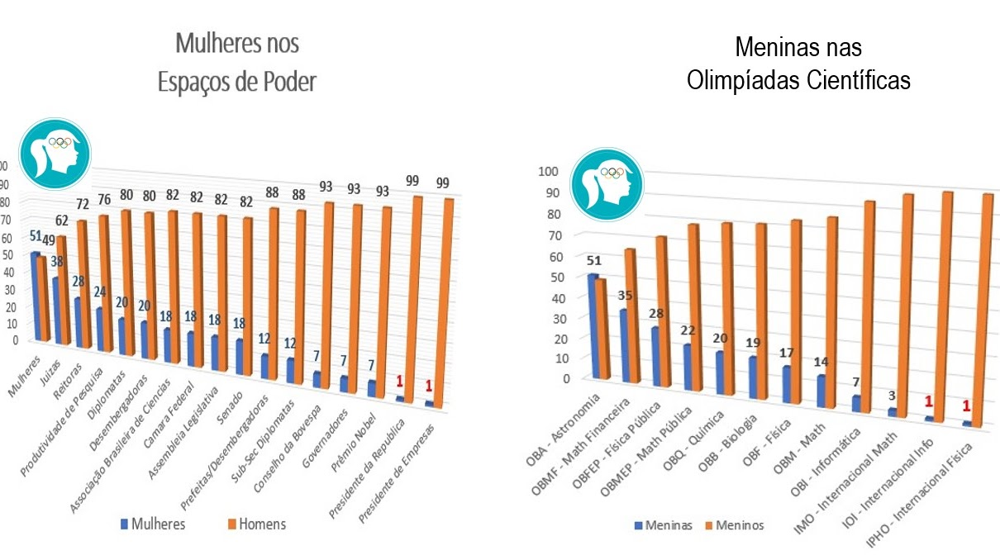
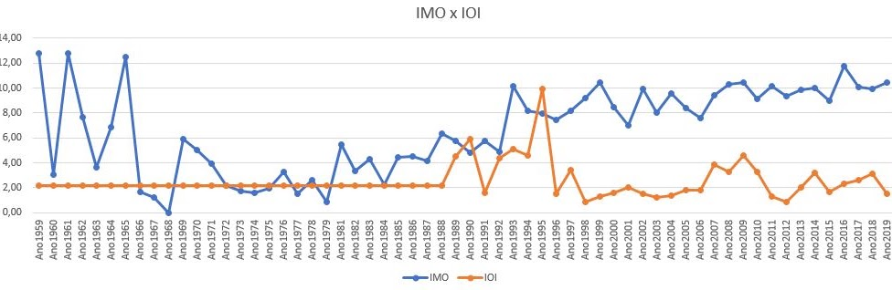
Mapas das meninas olímpicas
Distribuição regional em 2019
Mapas das meninas premiadas nas principais olimpíadas científicas brasileiras.
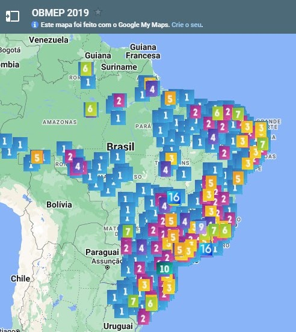
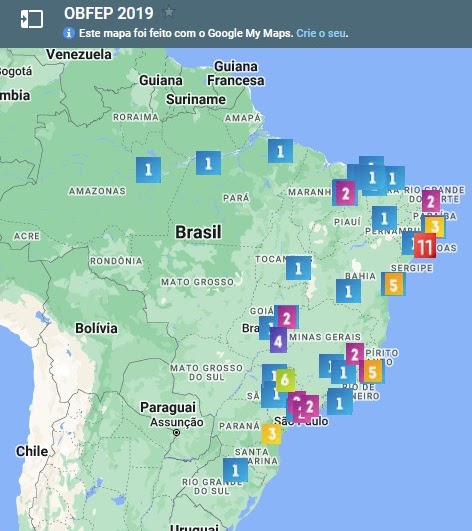
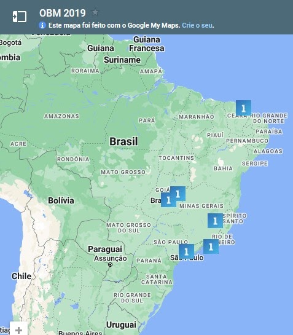
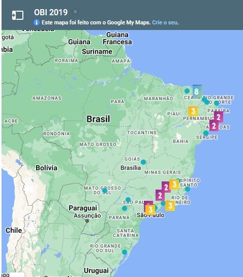
Meninas nas olimpíadas
Participação por níveis
Conforme aumenta o nível de idade e a competitividade das olimpíadas, diminui o percentual de meninas participantes.
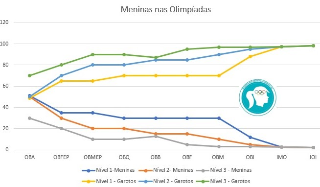
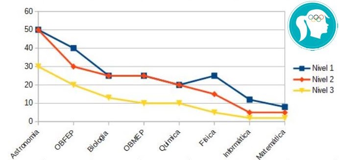
OBMEP
Olimpíada Brasileira de Matemática das Escolas Públicas
Segundo os dados levantados pelo movimento, quanto maior a importância da medalha, menor tende a ser o percentual feminino.
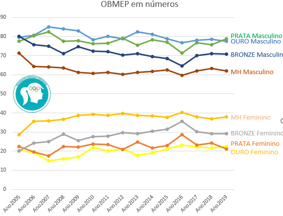
OBI
Olimpíada Brasileira de Informática
Em 2020, o Movimento organizou o 1º Torneio Feminino de Computação, impactando a presença das meninas no Nível 1 da modalidade Programação.
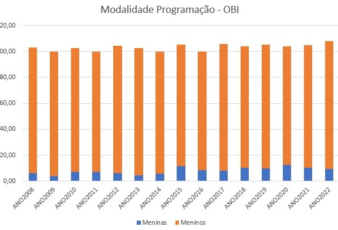
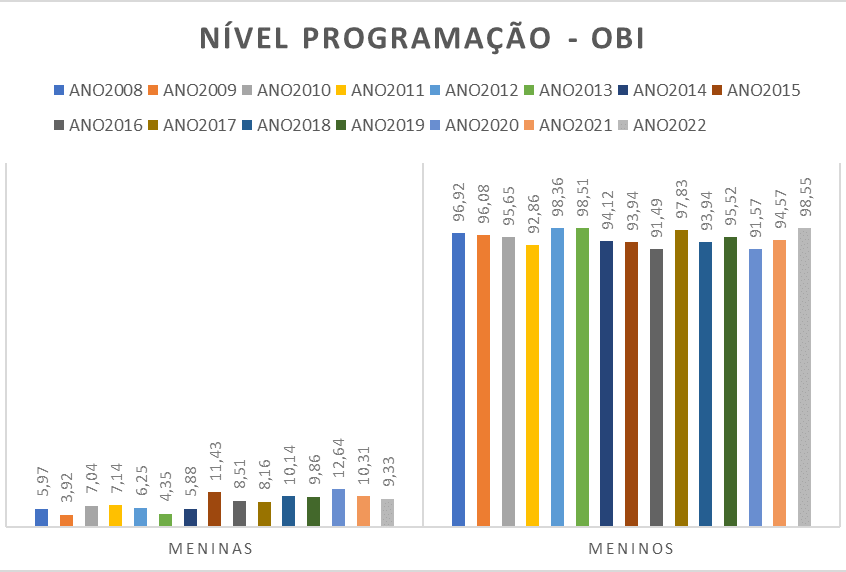
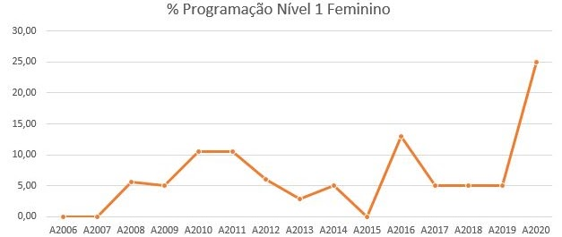
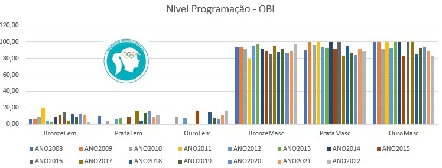
Outras olimpíadas
OBF, OBFEP e OBM
A sub-representação das meninas premiadas nas olimpíadas científicas, principalmente na área de STEM, tem se mantido constante nas últimas décadas.
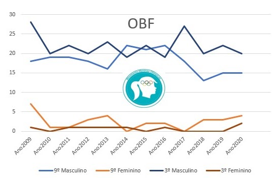
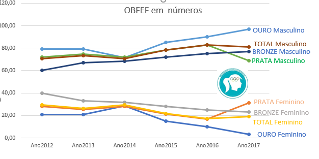
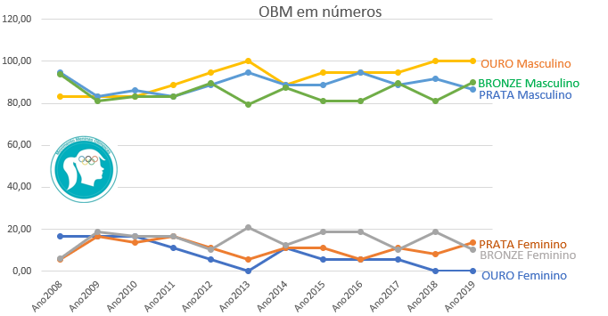

Trajetórias e equipes
Meninas em competições científicas
ICHO 2021
International Chemistry Olympiad
Na ICHO 2021, a equipe brasileira foi composta por 75% de meninas, enquanto o histórico anterior era majoritariamente masculino.
ICPC
Escola de Verão
Hana G. Albuquerque, Marina Malta Nogueira e Cássia Carolina Aguiar participaram de atividades ligadas à programação competitiva.
Melhores universidades
Universidades de excelência, como o MIT, historicamente apresentaram maioria masculina entre estudantes brasileiros aceitos. Em 2022, porém, as meninas representaram 75% dos aprovados brasileiros citados pelo movimento.
Meninas olímpicas de hoje serão as mulheres nos espaços de decisão do amanhã.
Desde 2016 incentivando as meninas olímpicas.